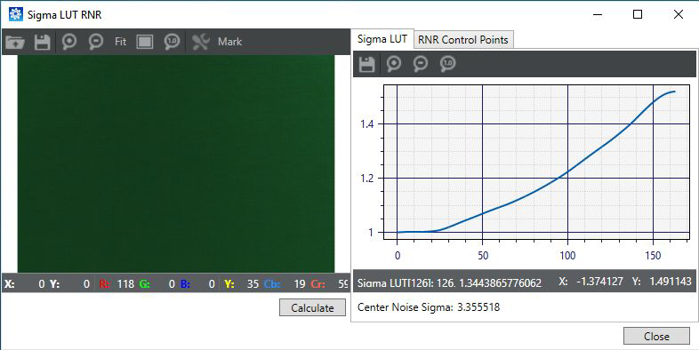
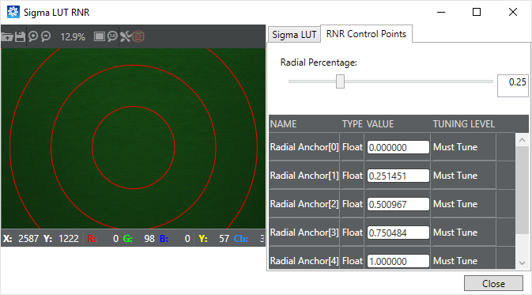

Before tuning the GIC module, determine how many lighting regions you need and
create them in the Parameter Editor.
-
On the Pipeline tab,
click .
-
Calibrate the noise profile as follows:
-
Click a region and click the
Load Image button.
-
Select a raw image of an MCC chart taken in the
appropriate lighting condition for that region.
-
Set the MCC markers. Drag the top-left MCC grid marker
to the center of the top-left color patch and drag the bottom-right MCC
grid marker to the center of the bottom right color patch, so that all
of the grid markers align within the color patches.
If the image is taken with a fisheye lens, to set the MCC markers for tuning,
hold the Ctrl Key (or Shift Key) while moving the markers
-
Click Calculate
to compute the noise profile. View the resulting noise profile graph on
the Noise Profile tab.
-
To calibrate the radial noise reduction, click Sigma LUT RNR and do the following steps:
-
Click the Sigma
LUT tab and open a gray chart raw image for the
appropriate lighting region. Click Calculate to generate the Sigma LUT plot.

-
Click the RNR Control
Points tab, and adjust the Radial Percentage slider to set the second control
point. The tool computes the other points automatically.

-
Click the Region Data
tab and tune the following GIC parameters as needed:
- Gic Noise Scale
- Gic Correction Strength
- Thin Line Noise Offset
- Pnr Noise Scale
- Pnr Correction Strength
- Noise Std Lut (advanced tuning)
- Radial Pnr Str Adj (advanced tuning)
-
Repeat all steps for each lighting region you set up.
-
To save the adjustments made to GIC parameters, click .